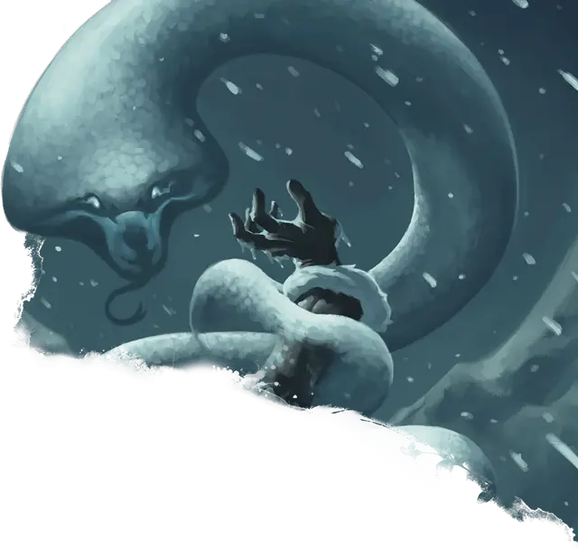

Полярный змей
Polar Serpent
Большой Элементаль, Нейтральный

Класс Защиты 14 Инициатива +4 (14)
Хиты 58 (9к10 + 9)
Скорость 40 футов, Полёта 40 футов
| мод | спас | ||
|---|---|---|---|
| СИЛ | 18 | +4 | +4 |
| ЛОВ | 19 | +4 | +4 |
| ТЕЛ | 12 | +1 | +1 |
| мод | спас | ||
|---|---|---|---|
| ИНТ | 4 | −3 | −3 |
| МДР | 12 | +1 | +1 |
| ХАР | 6 | −2 | −2 |
Уязвимость к урону Огонь
Иммунитеты Холод
Чувства Тёмное зрение 60 футов, пассивное Восприятие 13
Языки знает Первичный, но не говорит
Опасность 3 (700 опыта; БВ +2)
Особенности
Туманное скольжение. Змей может проходить через пространство шириной всего 1 дюйм, не тратя на это дополнительное перемещение.
Действия
Мультиатака. Змей совершает две атаки Укусом и использует Сдавливание.
Укус. Бросок рукопашной атаки: +6, досягаемость 5 фт. Попадание: 8 (1к8 + 4) Колющего урона плюс 3 (1к6) урона Холодом.
Сдавливание. Спасбросок Силы: Сл 14, одно видимое змеем существо Среднего размера или меньше в 10 футах. Провал: 3 (1к6) Дробящего урона плюс 7 (2к6) урона Холодом. Цель становится Схваченной (Сл освобождения от захвата 14); пока захват не окончен, она также Опутана.
Бонус мастерства +2
Среда обитания Арктика, Подземье
Сокровища Отсутствуют
Полярный змей
Эфемерный элементаль, вытягивающий тепло
Полярные змеи — крупные белые змеи, сотканные из тумана и холода, что таятся в заснеженных уголках мира. Сквозь метели и мглу они преследуют теплокровную добычу, обвивают жертву и вытягивают из неё тепло.